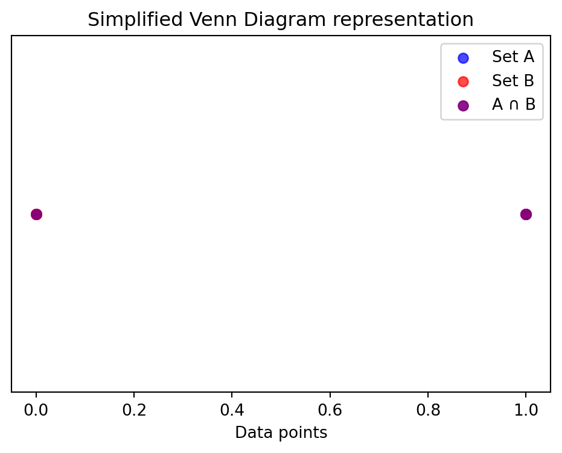
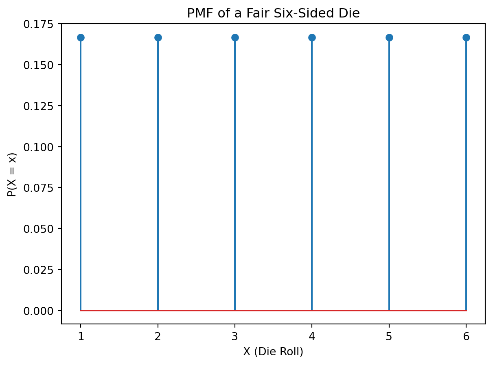
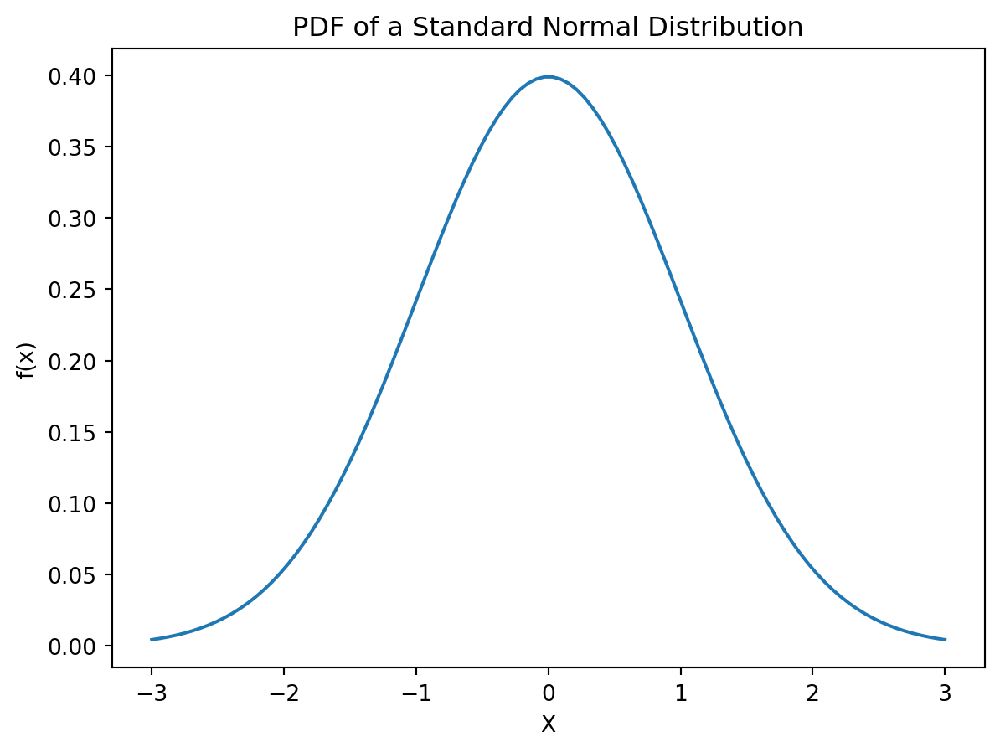
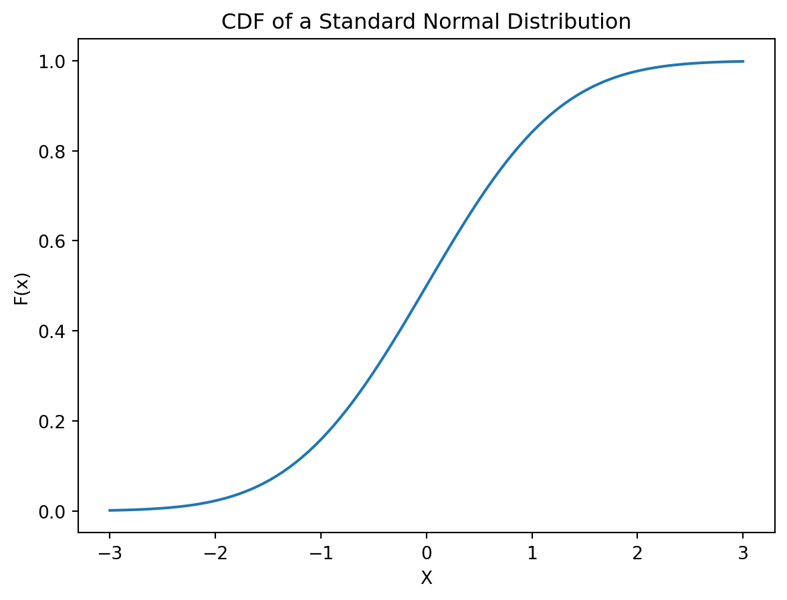
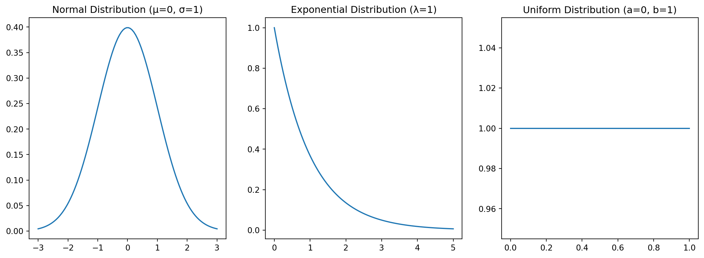
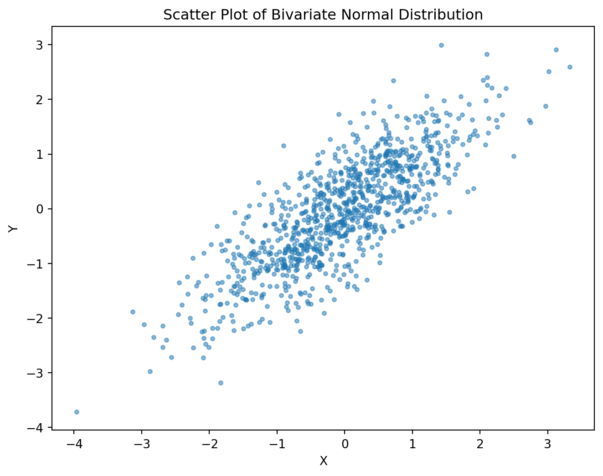

This chapter lays the groundwork for understanding Bayes’ Theorem by reviewing essential concepts from probability theory. A solid grasp of these fundamentals is essential for effectively applying Bayes’ Theorem and interpreting its results. We will cover basic probability concepts, the relationship between set theory and probability, conditional probability, and a brief preview of Bayes’ Theorem itself.
5.0.1 Basic Probability Concepts
Probability quantifies the likelihood of an event occurring. The probability of an event \(A\), denoted as \(P(A)\), is a number between 0 and 1 inclusive. \(P(A) = 0\) indicates that event \(A\) is impossible, while \(P(A) = 1\) indicates that event \(A\) is certain.
The probability of an event can be determined through various methods, including:
Classical Approach: If all outcomes are equally likely, the probability of an event is the ratio of favorable outcomes to the total number of possible outcomes. For example, the probability of rolling a 6 on a fair six-sided die is \(\frac{1}{6}\).
Frequentist Approach: The probability of an event is estimated as the relative frequency of its occurrence in a large number of trials. For instance, if a coin is flipped 1000 times and lands heads 505 times, the estimated probability of heads is \(\frac{505}{1000} = 0.505\).
Subjective Approach: The probability of an event is assigned based on an individual’s belief or judgment, often incorporating prior knowledge and expert opinion. This approach is particularly relevant in Bayesian statistics.
5.0.2 Set Theory and Probability
Set theory provides a powerful framework for representing and manipulating events. An event can be viewed as a subset of the sample space, which is the set of all possible outcomes.
Union: The union of two events \(A\) and \(B\), denoted as \(A \cup B\), represents the event that either \(A\) or \(B\) (or both) occur.
Intersection: The intersection of two events \(A\) and \(B\), denoted as \(A \cap B\), represents the event that both \(A\) and \(B\) occur.
Complement: The complement of an event \(A\), denoted as \(A^c\) or \(A'\), represents the event that \(A\) does not occur.
The probability of the union of two events can be calculated using the addition rule:
\(P(A \cup B) = P(A) + P(B) - P(A \cap B)\)
If events \(A\) and \(B\) are mutually exclusive (i.e., they cannot occur simultaneously, \(A \cap B = \emptyset\)), then \(P(A \cup B) = P(A) + P(B)\).
import matplotlib.pyplot as pltimport numpy as np# Example: Visualizing the union of two sets using Venn diagram (simplified representation)#Create dummy data for visualization (replace with your own data)setA = np.random.rand(20) <0.6#Simulate set AsetB = np.random.rand(20) <0.4#Simulate set Bplt.figure(figsize=(6, 4))plt.scatter(setA, np.zeros_like(setA), label='Set A', color='blue', alpha=0.7)plt.scatter(setB, np.zeros_like(setB), label='Set B', color='red', alpha=0.7)plt.scatter(np.intersect1d(setA, setB), np.zeros_like(np.intersect1d(setA, setB)), label='A ∩ B', color='purple', alpha=0.9) #Visualize the intersectionplt.xlabel('Data points')plt.yticks([])plt.title('Simplified Venn Diagram representation')plt.legend()plt.show()

5.0.3 Conditional Probability
Conditional probability refers to the probability of an event occurring given that another event has already occurred. The conditional probability of event \(A\) given event \(B\), denoted as \(P(A|B)\), is defined as:
This formula tells us that the probability of \(A\) given \(B\) is the ratio of the probability of both \(A\) and \(B\) occurring to the probability of \(B\) occurring.
5.0.4 Bayes’ Theorem (Preview)
Bayes’ Theorem provides a way to update our beliefs about an event based on new evidence. It’s a powerful tool for revising probabilities in light of new information. We’ll look at it in detail in later chapters, but here’s a preview:
Let \(A\) and \(B\) be two events. Bayes’ Theorem states:
\(P(A|B) = \frac{P(B|A)P(A)}{P(B)}\)
Where:
\(P(A|B)\) is the posterior probability of \(A\) given \(B\).
\(P(B|A)\) is the likelihood of \(B\) given \(A\).
\(P(A)\) is the prior probability of \(A\).
\(P(B)\) is the marginal likelihood of \(B\). (Often calculated as \(P(B) = P(B|A)P(A) + P(B|A^c)P(A^c)\) )
We will examine the interpretation and applications of Bayes’ Theorem in subsequent chapters. For now, it’s important to understand this fundamental equation as a cornerstone of Bayesian inference.
graph LR
A[Prior Probability P(A)] --> B(Bayes' Theorem);
C[Likelihood P(B|A)] --> B;
B --> D[Posterior Probability P(A|B)];
E[Evidence P(B)] --> B;
5.1 Random Variables
This chapter introduces the concept of random variables, a essential building block for understanding probability distributions and their application in Bayesian statistics. We will look at different types of random variables, their associated probability functions, and how to represent them using Python.
5.1.1 Definition and Types of Random Variables
A random variable is a variable whose value is a numerical outcome of a random phenomenon. It’s a function that maps the outcomes of a random experiment to numerical values. Random variables are typically denoted by uppercase letters (e.g., \(X\), \(Y\), \(Z\)), while their specific values are denoted by lowercase letters (e.g., \(x\), \(y\), \(z\)).
Random variables can be broadly classified into two types:
Discrete Random Variables: These variables can only take on a finite number of values or a countably infinite number of values. Examples include the number of heads in three coin flips (0, 1, 2, 3), the number of cars passing a certain point on a highway in an hour, or the outcome of rolling a die.
Continuous Random Variables: These variables can take on any value within a given range or interval. Examples include the height of a person, the temperature of a room, or the time it takes to complete a task.
5.1.2 Discrete vs. Continuous Random Variables
The key difference lies in the possible values the variable can assume. Discrete random variables have gaps between their possible values, while continuous random variables can take on any value within a continuous range. This difference leads to different ways of describing their probability distributions.
5.1.3 Probability Mass Function (PMF)
The probability mass function (PMF) describes the probability distribution of a discrete random variable. For a discrete random variable \(X\), the PMF is denoted as \(P(X = x)\) and represents the probability that \(X\) takes on the specific value \(x\). The PMF must satisfy the following conditions:
\(P(X = x) \ge 0\) for all \(x\).
\(\sum_{x} P(X = x) = 1\), where the sum is over all possible values of \(x\).
import matplotlib.pyplot as pltimport numpy as np# Example: PMF of a fair six-sided diex = np.arange(1, 7) # Possible values of the die rollpx = np.full(6, 1/6) # Probability of each value (uniform distribution)plt.stem(x, px)plt.xlabel("X (Die Roll)")plt.ylabel("P(X = x)")plt.title("PMF of a Fair Six-Sided Die")plt.show()

5.1.4 Probability Density Function (PDF)
The probability density function (PDF) describes the probability distribution of a continuous random variable. For a continuous random variable \(X\), the PDF is denoted as \(f(x)\). Unlike the PMF, the PDF does not directly give the probability of \(X\) taking on a specific value. Instead, the probability of \(X\) falling within a given interval \([a, b]\) is given by the integral of the PDF over that interval:
\(P(a \le X \le b) = \int_{a}^{b} f(x) dx\)
The PDF must satisfy the following conditions:
\(f(x) \ge 0\) for all \(x\).
\(\int_{-\infty}^{\infty} f(x) dx = 1\)
import matplotlib.pyplot as pltimport numpy as npfrom scipy.stats import norm# Example: PDF of a standard normal distributionx = np.linspace(-3, 3, 100)y = norm.pdf(x)plt.plot(x, y)plt.xlabel("X")plt.ylabel("f(x)")plt.title("PDF of a Standard Normal Distribution")plt.show()

5.1.5 Cumulative Distribution Function (CDF)
The cumulative distribution function (CDF) is a function that gives the probability that a random variable \(X\) is less than or equal to a given value \(x\). It’s denoted as \(F(x)\) and is defined as:
\(F(x) = P(X \le x)\)
The CDF is defined for both discrete and continuous random variables. For discrete variables, it’s the sum of probabilities up to \(x\). For continuous variables, it’s the integral of the PDF up to \(x\):
\(F(x) = \int_{-\infty}^{x} f(t) dt\)
The CDF is a non-decreasing function, with \(F(-\infty) = 0\) and \(F(\infty) = 1\).
import matplotlib.pyplot as pltimport numpy as npfrom scipy.stats import norm# Example: CDF of a standard normal distributionx = np.linspace(-3, 3, 100)y = norm.cdf(x)plt.plot(x, y)plt.xlabel("X")plt.ylabel("F(x)")plt.title("CDF of a Standard Normal Distribution")plt.show()

graph LR
A[Random Variable X] --> B(PMF/PDF);
B --> C[CDF F(x)];
subgraph Discrete
A --> D[Probability Mass Function P(X=x)];
end
subgraph Continuous
A --> E[Probability Density Function f(x)];
end
5.2 Common Probability Distributions
This chapter introduces some of the most frequently encountered probability distributions in statistics and their applications. Understanding these distributions is fundamental for applying Bayes’ Theorem effectively in various contexts. We will look at both discrete and continuous distributions and demonstrate how to work with them using Python.
Bernoulli Distribution: Models the outcome of a single Bernoulli trial—an experiment with only two possible outcomes, typically labeled “success” (1) and “failure” (0). The probability of success is denoted by \(p\), and the probability of failure is \(1-p\).
The PMF is: \(P(X=k) = p^k (1-p)^{1-k}\), where \(k \in \{0, 1\}\).
Binomial Distribution: Models the number of successes in a fixed number of independent Bernoulli trials. The parameters are \(n\) (number of trials) and \(p\) (probability of success in a single trial).
The PMF is: \(P(X=k) = \binom{n}{k} p^k (1-p)^{n-k}\), where \(k \in \{0, 1, ..., n\}\).
Poisson Distribution: Models the number of events occurring in a fixed interval of time or space, given a known average rate of occurrence (\(\lambda\)).
The PMF is: \(P(X=k) = \frac{e^{-\lambda} \lambda^k}{k!}\), where \(k \in \{0, 1, 2, ...\}\).
import matplotlib.pyplot as pltimport numpy as npfrom scipy.stats import bernoulli, binom, poisson# Example plots (adjust parameters as needed)fig, axes = plt.subplots(1, 3, figsize=(15, 5))# Bernoullix_bern = [0, 1]p_bern =0.7prob_bern = bernoulli.pmf(x_bern, p_bern)axes[0].stem(x_bern, prob_bern)axes[0].set_title("Bernoulli Distribution (p=0.7)")# Binomialn_binom =10p_binom =0.4x_binom = np.arange(n_binom +1)prob_binom = binom.pmf(x_binom, n_binom, p_binom)axes[1].stem(x_binom, prob_binom)axes[1].set_title("Binomial Distribution (n=10, p=0.4)")# Poissonlambda_poisson =5x_poisson = np.arange(15)prob_poisson = poisson.pmf(x_poisson, lambda_poisson)axes[2].stem(x_poisson, prob_poisson)axes[2].set_title("Poisson Distribution (λ=5)")plt.show()
Normal Distribution: A bell-shaped distribution characterized by its mean (\(\mu\)) and standard deviation (\(\sigma\)). It’s also known as the Gaussian distribution. The PDF is:
Exponential Distribution: Models the time between events in a Poisson process. It’s characterized by a rate parameter (\(\lambda\)). The PDF is:
\(f(x) = \lambda e^{-\lambda x}\) for \(x \ge 0\).
Uniform Distribution: Assigns equal probability to all values within a given range \([a, b]\). The PDF is:
\(f(x) = \frac{1}{b-a}\) for \(a \le x \le b\).
import matplotlib.pyplot as pltimport numpy as npfrom scipy.stats import norm, expon, uniform# Example plots (adjust parameters as needed)fig, axes = plt.subplots(1, 3, figsize=(15, 5))# Normalx_norm = np.linspace(-3, 3, 100)mu_norm =0sigma_norm =1prob_norm = norm.pdf(x_norm, mu_norm, sigma_norm)axes[0].plot(x_norm, prob_norm)axes[0].set_title("Normal Distribution (μ=0, σ=1)")# Exponentialx_exp = np.linspace(0, 5, 100)lambda_exp =1prob_exp = expon.pdf(x_exp, scale=1/lambda_exp)axes[1].plot(x_exp, prob_exp)axes[1].set_title("Exponential Distribution (λ=1)")# Uniforma_unif =0b_unif =1x_unif = np.linspace(a_unif, b_unif, 100)prob_unif = uniform.pdf(x_unif, loc=a_unif, scale=b_unif - a_unif)axes[2].plot(x_unif, prob_unif)axes[2].set_title("Uniform Distribution (a=0, b=1)")plt.show()

5.2.3 Visualizing Probability Distributions
Visualizing probability distributions provides valuable insights into their shapes, central tendencies, and spread. Histograms, PMFs (for discrete distributions), PDFs (for continuous distributions), and CDFs are commonly used visualization tools. The Python code examples above already showcase some of these visualizations.
5.2.4 Working with Distributions in Python
Python libraries like SciPy and NumPy offer powerful tools for working with probability distributions. The examples above demonstrate how to generate random samples, calculate probabilities, and plot distributions using scipy.stats. Further exploration of these libraries will greatly improve your ability to perform Bayesian analysis.
graph LR
A[Discrete Distributions] --> B(Bernoulli);
A --> C(Binomial);
A --> D(Poisson);
E[Continuous Distributions] --> F(Normal);
E --> G(Exponential);
E --> H(Uniform);
B -- PMF --> I[Visualization];
C -- PMF --> I;
D -- PMF --> I;
F -- PDF --> I;
G -- PDF --> I;
H -- PDF --> I;
I --> J[Python (SciPy, NumPy)];
5.3 Expected Value and Variance
Expected value and variance are two fundamental concepts in probability theory that describe the central tendency and spread of a probability distribution. Understanding these concepts is essential for interpreting statistical results and applying Bayesian methods.
5.3.1 Expected Value: Definition and Calculation
The expected value (or expectation) of a random variable \(X\), denoted as \(E[X]\) or \(\mu\), represents the average value of \(X\) over many repeated trials. For a discrete random variable with PMF \(P(X=x)\), the expected value is:
\(E[X] = \sum_{x} x \cdot P(X=x)\)
For a continuous random variable with PDF \(f(x)\), the expected value is:
\(E[X] = \int_{-\infty}^{\infty} x \cdot f(x) dx\)
The expected value is a weighted average, where each possible value of \(X\) is weighted by its probability.
5.3.2 Variance and Standard Deviation
The variance of a random variable \(X\), denoted as \(Var(X)\) or \(\sigma^2\), measures the spread or dispersion of the distribution around its expected value. It’s the average squared deviation from the mean. For a discrete random variable:
The standard deviation, denoted as \(\sigma\), is the square root of the variance: \(\sigma = \sqrt{Var(X)}\). It’s expressed in the same units as the random variable and provides a more interpretable measure of spread.
5.3.3 Properties of Expected Value and Variance
Some important properties of expected value and variance include:
\(E[c] = c\), where \(c\) is a constant.
\(E[aX + b] = aE[X] + b\), where \(a\) and \(b\) are constants.
\(Var(c) = 0\), where \(c\) is a constant.
\(Var(aX + b) = a^2 Var(X)\), where \(a\) and \(b\) are constants.
5.3.4 Interpreting Expected Value and Variance
Expected Value: Provides a measure of the central tendency or “average” of the distribution. It doesn’t represent a value the variable will necessarily take on, but rather the long-run average of many observations.
Variance/Standard Deviation: Indicates the variability or spread of the distribution. A larger variance means the values are more spread out from the mean, while a smaller variance suggests values are clustered closely around the mean.
5.3.5 Calculating Expected Value and Variance in Python
import numpy as npfrom scipy.stats import binom# Example: Expected value and variance of a binomial distributionn =10# Number of trialsp =0.5# Probability of success# Using scipy.statsmean_binom = binom.mean(n, p)var_binom = binom.var(n, p)std_binom = binom.std(n, p)print(f"Binomial Distribution (n={n}, p={p}):")print(f" Expected Value (Mean): {mean_binom}")print(f" Variance: {var_binom}")print(f" Standard Deviation: {std_binom}")# Manual calculation (for demonstration)x = np.arange(n +1)pmf = binom.pmf(x, n, p)manual_mean = np.sum(x * pmf)manual_var = np.sum((x - manual_mean)**2* pmf)print("\nManual Calculation:")print(f" Expected Value (Mean): {manual_mean}")print(f" Variance: {manual_var}")
Binomial Distribution (n=10, p=0.5):
Expected Value (Mean): 5.0
Variance: 2.5
Standard Deviation: 1.5811388300841898
Manual Calculation:
Expected Value (Mean): 4.999999999999999
Variance: 2.5000000000000004
graph LR
A[Random Variable X] --> B(Expected Value E[X]);
A --> C(Variance Var(X));
C --> D(Standard Deviation σ);
B -. measures central tendency --> E[Interpretation];
C -. measures spread --> E;
E --> F[Understanding Distribution];
5.4 Joint Probability Distributions
This chapter extends the concepts of probability distributions to scenarios involving multiple random variables. Understanding joint distributions is essential for tackling many real-world problems, particularly in Bayesian contexts where we often deal with multiple interacting variables.
5.4.1 Joint PMF and PDF
When dealing with two or more random variables, we need to consider their joint distribution. This describes the probabilities of different combinations of values for all variables.
Discrete Random Variables: For discrete random variables \(X\) and \(Y\), the joint probability mass function (PMF) is denoted as \(P(X=x, Y=y)\) and gives the probability that \(X=x\) and \(Y=y\) simultaneously.
Continuous Random Variables: For continuous random variables \(X\) and \(Y\), the joint probability density function (PDF) is denoted as \(f(x, y)\). The probability that \(X\) falls within the interval \([a, b]\) and \(Y\) falls within the interval \([c, d]\) is given by the double integral:
\(P(a \le X \le b, c \le Y \le d) = \int_{a}^{b} \int_{c}^{d} f(x, y) \, dy \, dx\)
5.4.2 Marginal Distributions
The marginal distribution of a single random variable is obtained from the joint distribution by summing or integrating over all possible values of the other variables.
Discrete: The marginal PMF of \(X\) is: \(P(X=x) = \sum_{y} P(X=x, Y=y)\) (similarly for \(Y\)).
Continuous: The marginal PDF of \(X\) is: \(f_X(x) = \int_{-\infty}^{\infty} f(x, y) \, dy\) (similarly for \(Y\)).
The marginal distributions describe the probability distribution of each variable individually, ignoring the other variable(s).
5.4.3 Conditional Distributions
The conditional distribution of one random variable given another describes the probability distribution of one variable when the value of the other variable is known.
Discrete: The conditional PMF of \(X\) given \(Y=y\) is: \(P(X=x|Y=y) = \frac{P(X=x, Y=y)}{P(Y=y)}\), provided \(P(Y=y) > 0\).
Continuous: The conditional PDF of \(X\) given \(Y=y\) is: \(f(x|y) = \frac{f(x, y)}{f_Y(y)}\), provided \(f_Y(y) > 0\).
5.4.4 Independence of Random Variables
Two random variables \(X\) and \(Y\) are independent if knowing the value of one variable doesn’t change the probability distribution of the other. This means:
Discrete:\(P(X=x, Y=y) = P(X=x)P(Y=y)\) for all \(x\) and \(y\).
Continuous:\(f(x, y) = f_X(x)f_Y(y)\) for all \(x\) and \(y\).
If \(X\) and \(Y\) are independent, their joint distribution is simply the product of their marginal distributions.
import numpy as npimport matplotlib.pyplot as pltfrom scipy.stats import multivariate_normal# Example: Bivariate Normal Distribution (Illustrating marginal and conditional distributions)# Parameters for the bivariate normal distributionmean = [0, 0]cov = [[1, 0.8], [0.8, 1]] # Covariance matrix (0.8 indicates correlation)# Generate data from bivariate normal distributiondata = multivariate_normal.rvs(mean=mean, cov=cov, size=1000)x, y = data[:, 0], data[:, 1]# Plotfig, ax = plt.subplots(figsize=(8,6))ax.scatter(x,y, alpha=0.5, s=10)ax.set_xlabel("X")ax.set_ylabel("Y")ax.set_title("Scatter Plot of Bivariate Normal Distribution")plt.show()# Marginal distributions would require more complex integration for proper PDF calculation.# This section just highlights visualization of the joint distribution# Further analysis of marginal and conditional distributions requires more advanced techniques.

graph LR
A[X, Y (Joint Distribution)] --> B(Joint PMF/PDF);
B --> C(Marginal Distribution of X);
B --> D(Marginal Distribution of Y);
B --> E(Conditional Distribution X|Y);
B --> F(Conditional Distribution Y|X);
subgraph Independence
A -. P(X,Y) = P(X)P(Y) --> G[Independent];
end
subgraph Dependence
A --> H[Dependent];
end